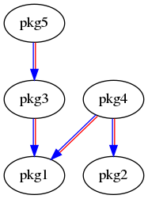
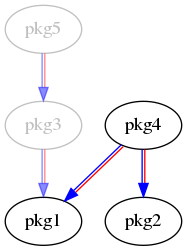

Nov. 1st 2019, Dirk Thomas
ROSCon 2019, Macau, China
README to figure out:
Generated by
colcon-graphviz-anim
| 1. | 2. | 3. | 4. | 5. | 6. | 7. | 8. | ||
|---|---|---|---|---|---|---|---|---|---|
| catkin_make: | |||||||||
| catkin_make_isolated: | |||||||||
| catkin_tools: | |||||||||
| ament_tools: |
But...
package.xml as for FastRTPSHigh level goals
-DENABLE_FOO to a single packageOut of scope - covered by other tools
vcstoolrosdep.deb) → bloom, dpkg-buildpackageSoftware engineering goals
colcon including common extensions, via:
python3-colcon-common-extensions orcolcon-common-extensionsbash or zsh? Get completion!
python3-argcomplete [deb] / argcomplete [pip]colcon-argcomplete.bash|zsh from:
/usr/share/colcon_argcomplete/hook/ or$HOME/.local/share/colcon_argcomplete/hook/roscd? Try colcon_cd
colcon_cd.sh (similar location)colcon version-checkFor more details see colcon.readthedocs.io
In ROS the sources of the packages to be processes are commonly placed
<ws>src
<ws>
|-- src
|-- dir1
|-- package.xml [with the name tag containing "pkg1"]
|-- some_name
|-- package.xml [nested under another package not supported]
|-- dir2
|-- dir3
|-- CMakeLists.txt [with the function call "project(pkg3)"]
|-- dir4
|-- setup.py [with the setup argument "name='pkg4'"]
|-- dir5
|-- COLCON_IGNORE [empty marker file]
|-- ...
build Commandcolcon build
--cmake-args
$ colcon build
Starting >>> pkg1
Starting >>> pkg2
Finished <<< pkg1 [10s]
Starting >>> pkg3
Finished <<< pkg3 [10s]
Starting >>> pkg5
Finished <<< pkg2 [25s]
Starting >>> pkg4
Finished <<< pkg5 [20s]
Finished <<< pkg4 [20s]
Summary: 5 packages finished [45s]
Note: if you build more than once make sure to use ccache.
Metadata
yaml files
./colcon.meta is picked up automatically--metas
{
"names": {
"fastrtps": {
"cmake-args": ["-DSECURITY=ON"]
}
}
}
See colcon.readthedocs.io for information about .meta files.
See colcon-metadata-repository for information how to share such files.
[23s] [2/5 complete] [2 ongoing] [pkg2:install - 23s] [pkg5:cmake - 1s]
stderr output will be shown after a package finished
stderr output doesn't mean it failed
stderr output (e.g. on Windows)
log file
colcon build --help
--event-handlers console_cohesion+
console_direct+
+ enables a specific handler, - disables it
<ws> |-- log |-- <cmd>_<timestamp> |-- latest_<cmd> |-- latest |-- events.log |-- logger_all.log |-- <pkg> |-- command.log |-- stderr.log |-- stdout.log |-- stdout_stderr.log |-- streams.log
list Command
<ws>
|-- src
|-- dir1
|-- package.xml
|-- some_name
|-- package.xml
|-- dir2
|-- dir3
|-- CMakeLists.txt
|-- dir4
|-- setup.py
|-- dir5
|-- COLCON_IGNORE
|-- ...
--base-paths .--paths--metascolcon list --help for all argumentspackage.xml following a specific schemaCMakeLists.txt filesetup.py fileGazebo has a share/gazebo/setup.sh file which should be sourced (see colcon-metadata-repository)
$ colcon list
pkg1 <ws>/src/dir1 (ros.ament_cmake)
pkg3 <ws>/src/dir2/dir3 (cmake)
pkg4 <ws>/src/dir2/dir4 (python)
info Command$ colcon info ament_cmake_core path: <ws>/src/ament_cmake_core type: ros.ament_cmake name: ament_cmake_core dependencies: build: ament_package cmake python3-catkin-pkg-modules run: ament_package cmake python3-catkin-pkg-modules test: metadata: version: 0.8.0
ros. prefix identifies that the package has a package.xml fileament_cmake suffix it determinespackage.xml filegraph Command
$ colcon graph --legend
+ marks when the package in this row can be processed
* marks a direct dependency from the package indicated
by the + in the same column to the package in this row
. marks a transitive dependency
pkg1 + **.
pkg2 + *
pkg3 + *
pkg4 +
pkg5 +
pkg4 and pkg5 depends on which dependencies are completed first

colcon graph --dot | dot ...
Instead of processing all packages in a workspace you often
want to only process a subset to speed up your workflow.
The following options apply to various commands:
--packages-select <pkgname1> [<pkgname2> ..]build their dependencies must have been build beforepkgX?
--packages-up-to pkgXpkgY?
pkgX: --packages-above <pkgY>pkgX: --packages-select-by-dep <pkgY>colcon build --help
--packages-select-regex <regex>, --packages-select-build-failed

Note: there are options to skip packages.
Skipping is different from previous seen ignoring.
The former doesn't process the package but uses it as a dependency for others.
The later is equal to the package not being in the workspace.
Sometimes the existing package selection arguments
aren't covering what you want to select / skip.
--packages-up-to but with multiple package names matching a regular expression:
colcon list --packages-select-regex <regex> to determine the set of packages--packages-up-to with the result of the previous determined package namescolcon build --packages-up-to `colcon list --packages-select-regex <regex>`
test / test-result Commandcolcon test
build a package before testing--ctest-args / --pytest-args--retest-until-fail N--retest-until-pass Nbuild and test the package itself--packages-above--packages-select-test-failures--return-code-on-test-failurecolcon test-result
--verbose--deletecolcon --help / colcon <command> --help